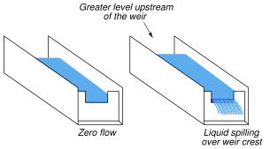

Subsections
An variable-area flowmeter is one where the fluid must pass through a restriction whose area increases with flow rate. This stands in contrast to flowmeters such as orifice plates and venturi tubes where the cross-sectional area of the flow element remains fixed.
The simplest example of a variable-area flowmeter is the rotameter, which uses a solid object (called a plummet or float) as a flow indicator, suspended in the midst of a tapered tube:
As fluid flows upward through the tube, a pressure differential develops across the plummet. This pressure differential, acting on the effective area of the plummet body, develops an upward force ( ). If this force exceeds the weight of the plummet, the plummet moves up. As the plummet moves farther up in the tapered tube, the area between the plummet and the tube walls (through which the fluid must travel) grows larger. This increased flowing area allows the fluid to make it past the plummet without having to accelerate as much, thereby developing less pressure drop across the plummet's body. At some point, the flowing area reaches a point where the pressure-induced force on the plummet body exactly matches the weight of the plummet. This is the point in the tube where the plummet stops moving, indicating flow rate by it position relative to a scale mounted (or etched) on the outside of the tube.
). If this force exceeds the weight of the plummet, the plummet moves up. As the plummet moves farther up in the tapered tube, the area between the plummet and the tube walls (through which the fluid must travel) grows larger. This increased flowing area allows the fluid to make it past the plummet without having to accelerate as much, thereby developing less pressure drop across the plummet's body. At some point, the flowing area reaches a point where the pressure-induced force on the plummet body exactly matches the weight of the plummet. This is the point in the tube where the plummet stops moving, indicating flow rate by it position relative to a scale mounted (or etched) on the outside of the tube.
The following rotameter uses a spherical plummet, suspended in a flow tube machined from a solid block of clear plastic. An adjustable valve at the bottom of the rotameter provides a means for adjusting gas flow:
The same basic flow equation used for pressure-based flow elements holds true for rotameters as well:
However, the difference in this application is that the value inside the radicand is constant, since the pressure difference will remain constant1.32 and the fluid density will likely remain constant as well. Thus,  will change in proportion to
will change in proportion to  . The only variable within relevant to plummet position is the flowing area between the plummet and the tube walls.
. The only variable within relevant to plummet position is the flowing area between the plummet and the tube walls.
Most rotameters are indicating devices only. They may be equipped to transmit flow information electronically by adding sensors to detect the plummet's position in the tube, but this is not common practice.
Rotameters are very commonly used as purge flow indicators for pressure and level measurement systems requiring a constant flow of purge fluid (see sections ![[*]](crossref.png) and 1.3.2 for practical examples). Such rotameters are usually equipped with hand-adjustable needle valves for manual regulation of purge fluid flow rate.
and 1.3.2 for practical examples). Such rotameters are usually equipped with hand-adjustable needle valves for manual regulation of purge fluid flow rate.
A very different style of variable-area flowmeter is used extensively to measure flow rate through open channels, such as irrigation ditches. If an obstruction is placed within a channel, any liquid flowing through the channel must rise on the upstream side of the obstruction. By measuring this liquid level rise, it is possible to infer the rate of liquid flow past the obstruction.
The first form of open-channel flowmeter is the weir, which is nothing more than a dam obstructing passage of liquid through the channel. Three styles of weir are shown in the following illustration; the rectangular, Cippoletti, and V-notch:
A rectangular weir has a notch of simple rectangular shape, as the name implies. A Cippoletti weir is much like a rectangular weir, except that the vertical sides of the notch have a 4:1 slope (rise of 4, run of 1; approximately a 14 degree angle from vertical). A V-notch weir has a triangular notch, customarily measuring either 60 or 90 degrees.
The following photograph shows water flowing through a Cippoletti weir made of 1/4 inch steel plate:
At a condition of zero flow through the channel, the liquid level will be at or below the crest (lowest point on the opening) of the weir. As liquid begins to flow through the channel, it must spill over the crest of the weir in order to get past the weir and continue downstream in the channel. In order for this to happen, the level of the liquid upstream of the weir must rise above the weir's crest height. This height of liquid upstream of the weir represents a hydrostatic pressure, much the same as liquid heights in piezometer tubes represent pressures in a liquid flowstream through an enclosed pipe (see section for examples of this). The height of liquid above the crest of a weir is analogous to the pressure differential generated by an orifice plate. As liquid flow is increased even more, a greater pressure (head) will be generated upstream of the weir, forcing the liquid level to rise. This effectively increases the cross-sectional area of the weir's “throat” as a taller stream of liquid exits the notch of the weir1.33.

This dependence of notch area on flow rate creates a very different relationship between flow rate and liquid height (measured above the crest) than the relationship between flow rate and differential pressure in an orifice plate:
Where,
= Volumetric flow rate (cubic feet per second – CFS)
 = Width of crest (feet)
= Width of crest (feet)
 = V-notch angle (degrees)
= V-notch angle (degrees)
= Head (feet)
As you can see from a comparison of characteristic flow equations between these three types of weirs, the shape of the weir's notch has a dramatic effect on the mathematical relationship between flow rate and head (liquid level upstream of the weir, measured above the crest height). This implies that it is possible to create almost any characteristic equation we might like just by carefully shaping the weir's notch in some custom form. A good example of this is the so-called proportional or Sutro weir, which is designed to have a linear relationship between head and flow rate:
Sutro weirs are not used very often, due to their inherently weak structure and tendency to clog with debris.
A rare example of a Sutro weir appears in the following photograph, discharging flow from a lake into a stream:
The metal plates forming the weir's shape are quite thick (about 1/2 inch) to give the weir sufficient strength. A good construction practice seen on this Sutro weir, but recommended on all weir designs, is to bevel the downstream edge of the weir plate much like a standard orifice plate profile. The beveled edge provides a minimum-friction passageway for the liquid as it spills through the weir's opening.
A variation on the theme of a weir is another open-channel device called a flume. If weirs may be thought of as open-channel orifice plates, then flumes may be thought of as open-channel venturi tubes:
Like weirs, flumes generate upstream liquid level height changes indicative of flow rate. One of the most common flume design is the Parshall flume, named after its inventor R.L. Parshall when it was developed in the year 1920.
The following formulae relate head (upstream liquid height) to flow rate for free-flowing Parshall flumes1.34:
Where,
= Volumetric flow rate (cubic feet per second – CFS)
= Width of flume throat (feet)
= Head (feet)
Flumes are generally less accurate than weirs, but they do enjoy the advantage of being inherently self-cleaning. If the liquid stream being measured is drainage- or waste-water, a substantial amount of solid debris may be present in the flow that could cause repeated clogging problems for weirs. In such applications, flumes are often the more practical flow element for the task (and more accurate over the long term as well, since even the finest weir will not register accurately once fouled by debris).
Once a weir or flume has been installed in an open channel to measure the flow of liquid, some method must be employed to sense upstream liquid level and translate this level measurement into a flow measurement. Perhaps the most common technology for weir/flume level sensing is ultrasonic (see section beginning on page for more information on how this technology works). Ultrasonic level sensors are completely non-contact, which means they cannot become fouled by the process liquid (or debris in the process liquid). However, they may be “fooled” by foam or debris floating on top of the liquid, as well as waves on the liquid surface.
The following photograph shows a Parshall flume measuring effluent flow from a municipal sewage treatment plant, with an ultrasonic transducer mounted above the middle of the flume to detect water level flowing through:
Once the liquid level is successfully measured, a computing device is used to translate that level measurement into a suitable flow measurement (and in some cases even integrate that flow measurement with respect to time to arrive at a value for total liquid volume passed through the element, in accordance with the calculus relationship
).
A technique for providing a clean and “quiet” (still) liquid surface to measure the level of is called a stilling well. This is an open-top chamber connected to the weir/flume channel by a pipe, so the liquid level in the stilling well matches the liquid level in the channel. The following illustration shows a stilling well connected to a weir/flume channel, with the direction of liquid flow in the channel being perpendicular to the page (i.e. either coming toward your eyes or going away from your eyes):
To discourage plugging of the passageway connecting the stilling well to the channel, a small flow rate of clean water may be introduced into the well. This forms a constant purge flow into the channel, flushing out debris that might otherwise find its way into the connecting passageway to plug it up. Note how the purge water enters the stilling well through a submerged tube, so it does not cause splashing on the water's surface inside the well which could cause measurement problems for the ultrasonic sensor:
A significant advantage that weirs and flumes have over other forms of flow measurement is exceptionally high rangeability: the ability to measure very wide ranges of flow with a modest pressure (height) span. Another way to state this is to say that the accuracy of a weir or flume is quite high even at low flow rates.
Earlier in this section you saw a three-image representation of liquid flow through a rectangular weir. As fluid flow rate increased, so did the height (head) of the liquid upstream of the weir:
The height of liquid upstream of the weir depends on the flow rate (volumetric or mass  ) as well as the effective area of the notch through which the fluid must pass. Unlike an orifice plate, this area changes with flow rate in both weirs and flumes. One way to envision this by comparison is to imagine a weir as acting like an elastic orifice plate, whose bore area increases with flow rate. This flow-dependent notch area exhibited by both weirs and flumes means that these devices become more sensitive to changes in flow as the flow rate becomes smaller.
) as well as the effective area of the notch through which the fluid must pass. Unlike an orifice plate, this area changes with flow rate in both weirs and flumes. One way to envision this by comparison is to imagine a weir as acting like an elastic orifice plate, whose bore area increases with flow rate. This flow-dependent notch area exhibited by both weirs and flumes means that these devices become more sensitive to changes in flow as the flow rate becomes smaller.
A comparison of transfer function graphs for closed-pipe head elements such as orifice plates and venturi tubes versus weirs and flumes shows this striking difference in characteristics:
Looking at the orifice plate / venturi tube graph near the lower-left corner, you can see how small changes in flow result in extremely small changes in head (differential pressure), because the function has a very low slope (small
) at that end. By comparison, a weir or flume produces relatively large changes in head (liquid elevation) for small changes in flow near the bottom end of the range, because the function has a very steep slope (large
) at that end.
The practical advantage this gives weirs and flumes is the ability to maintain high accuracy of flow measurement at very low flow rates – something a fixed-orifice element simply cannot do. It is commonly understood in industry that traditional orifice plate flowmeters do not maintain good measurement accuracy much below a third of their full-range flow (a rangeability or turndown of 3:1), whereas weirs (especially the V-notch design) can achieve far greater turndown (up to 500:1 according to some sources1.35).